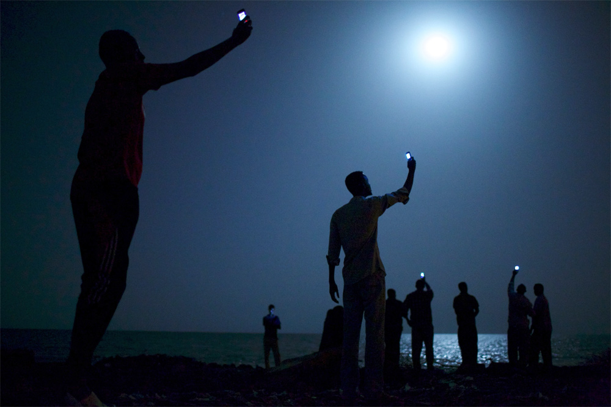
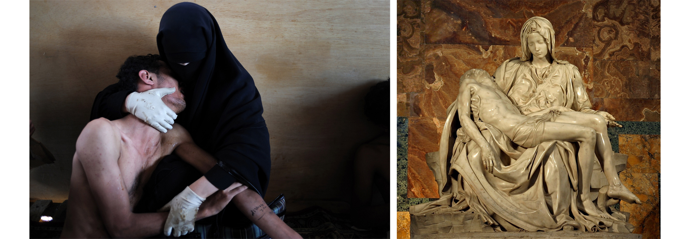
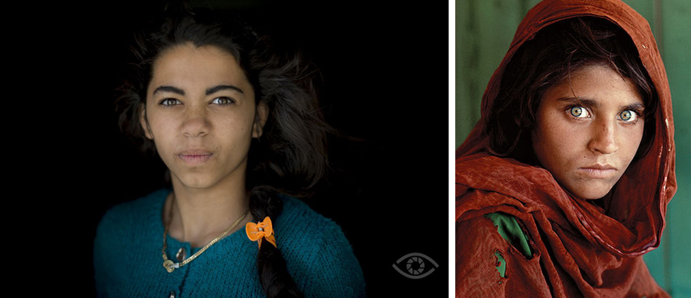
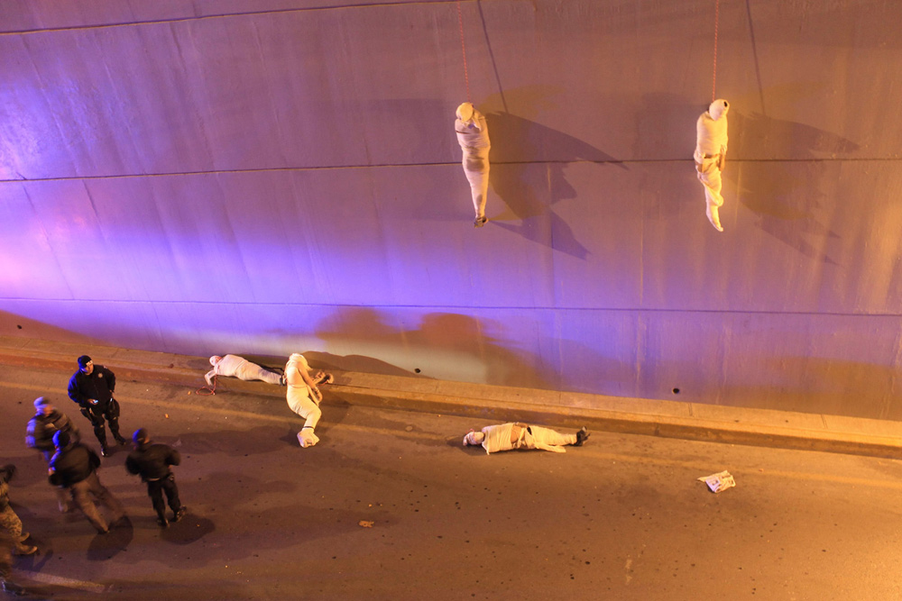
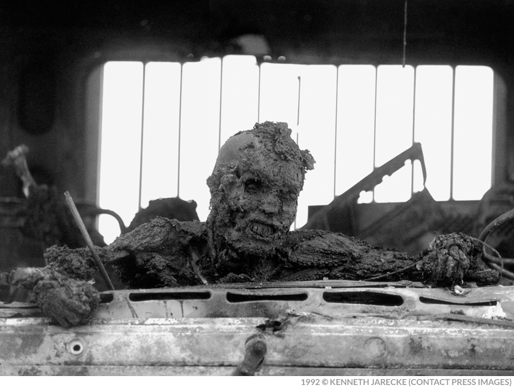
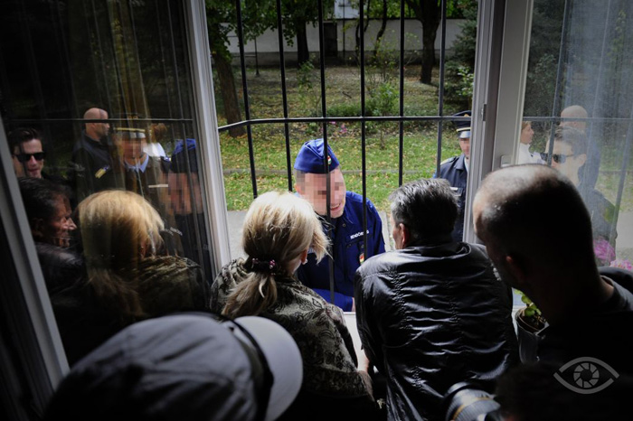

Конкурсы фотожурналистики — это попытка посмотреть на события в стране или мире с предельной объективностью. На мировом уровне такую возможность предоставляет конкурс World Press Photo (WPP), на уровне одной страны — национальные конкурсы пресс-фотографии. Но какие именно фотографии мы видим на конкурсах, и от чего это зависит? И что видит на них обычный зритель, а что — профессиональное сообщество?
О фотографии-победителе WPP 2013 Джона Стэнмайера (John Stanmeyer) обозреватель Time Light Box Фред Ритчин (Fred Ritchin) сказал, что это «тихое, абстрактное, церемониальное и квазирелигиозное изображение». Сам победитель вкладывает в него следующий смысл: «Фотография сомалийцев, которые пытаются «поймать» сигнал, является образом нас, когда мы стоим на перекрёстке человечности и должны спросить самих себя, что действительно важно и требует коллективного внимания в глобальном обществе, где пересекаются вопросы миграции, границ, войн, бедности, технологий и коммуникации».
Но Ритчин пытается взглянуть на фото и с другой стороны: со стороны проблем журналистского сообщества. Его главная цель — трудности современного журналистского фотосообщества, выраженные прежде всего проблемами коммуникации и разобщённости фотожурналистов.

«Сигнал». Джон Стэнмайер, фотография-победитель World Press Photo 2013.
Убеждённость Ритчина в том, что фото года изображает в первую очередь проблемы внутренних процессов фотожурналистского цеха, даёт повод поговорить о дискурсах, которые могут вызывать снимки-победители подобных конкурсов. Из Ритчина следуют два дискурса. Первый относится к тому, как воспринимает изображение зритель и какие связи он выстраивает. Назовём его событийным, т.е. представляющим событие, тему. Говоря о фотографии Стэнмайера, это тема глобализации, эмиграции и зависимости от современных технологий. Второй дискурс, которому Ритчин уделяет много внимания — это дискурс сообщества, журналистский или профессиональный. Здесь мы обращаемся к теме разрозненности сообщества, его потерянности касательно новых медиа. Поэтому конкурс WPP — определённая вершина фотожурналистики, внимание к работам-победителям, а значит и к темам, которые они поднимают и раскрывают. Это их миссия: «Мы существуем, чтобы вдохновлять на понимание мира через качество фотожурналистики». Но помимо WPP есть множество национальных конкурсов пресс-фотографии, которые также ставят перед собой задачу развивать фотожурналистику, быть летописцами своей страны.
Построенные наподобие WPP (международное жюри, схожие номинации, туры голосования, Гран-при, иногда и конкурсы мультимедиа), но со своими особенностями, конкурсы из года в год предоставляют новые фотографии. Но как получается, что мы видим именно их? Какие факторы здесь влиятельны? Эти вопросы относятся к журналистскому, профессиональному дискурсу. И поскольку в Беларуси есть конкурс Belarus Press Photo, любопытно обратиться к региону Восточной Европы, в частности к состоянию конкурсов пресс-фото в следующих странах: Венгрия, Чехия, Словакия, Словения, Польша, Россия и Беларусь.
Про жестокость и жюри
Фактор 1. Вопрос эстетики и этики
Один из значительных плюсов в организации WPP — возможность быть в курсе происходящего при голосовании. Во время работы жюри последнего конкурса можно было следить за лентой новостей. А после завершения голосования и объявления победителей секретарь жюри Дэвид Кэмпбелл (David Campbell) изложил свои мысли по поводу прошедшего голосования на личном сайте, где упоминает про обстоятельные дискуссии, в том числе о необходимости демонстрации насилия и определении степени жестокости изображения. Член жюри Сьюзи Линфилд (Susie Linfield) говорит, что эстетическим и этическим вопросам уделялось достаточно времени, чтобы решить, что показывать, а что нет: если был способ другим путём привлечь внимание к теме, они искали его. В качестве примера Линфилд приводит фотосерию Фреда Рамоса (Fred Ramos) о насилии в Северо-Центральном Американском треугольникеГондурас, Гватемала и Эль-Сальвадор. На фотографиях запечатлены обрывки одежды, по которой родственники узнают пропавших без вести и погибших в результате деятельности местных группировок.
В конкурсе участвует множество фотографий на одну актуальную тему, поэтому часто жюри может выбрать визуальную составляющую: прямое насилие либо сдержанные работы, как случилось в этом году. Вышеупомянутые снимки африканских мигрантов в отношении визуализации насилия являются глубокой фотожурналистской работой: здесь нет крови, скрывающегося искусства, но это понятный, можно сказать, классический снимок с подписью, необходимой для погружения в тему. Андрей Поликанов, директор фотослужбы журнала «Русский Репортёр», отмечает, что фотография-победитель 2014 «расширяет границы» для фотографов, снимающих не только события, но и их последствия, и даёт им возможность победить.
Но есть и другая категория фотографий, изображения и образы которых правдиво ужасны и в то же время притягательны. Популярный пример — фотография-победитель 2012 года Самуэля Аранда (Samuel Aranda), в которой страдание и боль идут рядом со знакомыми религиозными образами и которую не единожды сравнивали с образами Пьеты. Фотография Аранда сочетает в себе и журналистику, и искусство. Вопрос жестокости здесь становится второстепенным, но он активно обсуждаем жюри WPP.

Слева: мать обнимает сына, пострадавшего от слезоточивого газа во время уличных протестов в Йемене. Самуэль Аранда, Йемен, 2011, фотография-победитель World Press Photo 2012.
Справа: «Пьета», Микеланджело Буонарроти, скульптура из мрамора, 1499 г.
Андрей Поликанов, который был в составе жюри в 2012 году, утверждает, что этот вопрос всегда является «камнем преткновения». В итоге такого столкновения в конкурсе побеждают работы различного характера. Но роль играет и состав жюри: изучив состав, с большой долей вероятности можно предположить, какого рода снимок победит.
Искусство на службе у фотожурналистики
Фактор 2. Образы искусства и фотографии
Сьюзен Сонтаг (Susan Sontag) писала в своей работе «Смотрим на чужие страдания» про излишнюю «эстетизацию» документальной фотографии, про её двойные смыслы: «Красивая фотография уводит внимание от отрезвляющего сюжета и переключает его на собственные средства, то есть компрометирует статус снимка как документа. Фотография шлёт разные сигналы. Прекратите это, — требует она. Но и восклицает: Какое зрелище!»
Исходя из высказывания Сонтаг, можно говорить о новых функциях фотографии: она является одновременно документом или средством журналистики и частью искусства. Это объединение функций и есть «эстетизация» фотографии. Необходимо обратить внимание на то, каким образом искусство помогает пресс-фотографии транслировать себя новыми способами. В пресс-конкурсах существует множество примеров.
В первую очередь выделим подражание уже известным фотографическим образам. В венгерском конкурсе Sajtófotó 2013 года портрет Андраса Д. Хайду (András D. Hajdú) показывает девочку-цыганку, растущую в условиях постоянных вспышек болезней. Этот классический портрет, кажется, становится образным продолжением фотографии афганской девочки Стива Маккури (Steve McСurry).

Слева: Андрас Д. Хайду, Венгрия, 2013 г.
Справа: Стив Маккури, Пакистан, 1984 г.
В ещё совсем юном конкурсе Slovak Press Photo победитель Борис Немет (Boris Németh) снимает разлив Дуная, словно повторяя стиль Мартина Парра (Martin Parr). Это подражание (чаще, конечно, неосознанное) фотографии самой себе мы всегда будем сравнивать с чем-то, что уже было и, вероятно, прозвучало громче. Потому как что-то новое открывает новую модель для подражания, и это вполне нормально.
В венгерском Sajtófotó есть серия-победитель Лазло Вега (László Végh) со студийными портретами покалеченных человеком собак. «Светлый ключ» и чрезвычайно прямая, платоновская постановка обнажают ужасающие раны животных. Визуальный язык серии оглушителен, и не исключено, что кто-то не сможет его выдержать. Автор вплотную подходит к теме жестокости, находится на грани между желанием придать насилию форму и желанием задокументировать его отражение в увечьях собак.
Другая форма подражания касается искусства, где фотография не только документ, журналистский факт, но и читаемый образ искусства. На этом этапе происходит та эстетизация фотографии, о которой говорила Сонтаг, приводя в пример сходство с Пьетой в работе Юджина Смита (Eugene Smith) или с образом «Снятия с креста» в работах Дона Маккаллина (Don McCullin). Возвращаясь к фотографии Самуэля Аранда, можно говорить о таком процессе, как подражание фотографиям, которые подражают искусству.
В качестве примера эстетизации фотографии автор блога No caption needed философ Роберт Хариман (Robert Hariman) рассматривает фото Кристофера Ванегаса (Christopher Vanegas) про игры мексиканских наркобаронов. С помощью тел похищенных людей они посылают друг другу сообщения («нарко-баннеры»). Хариман говорит о возможности современных террористов выступать в медиа в качестве перформеров, где жертва из объекта преступления превращается в объект искусства. И хоть фотограф обрамляет происходящее широкими рамками, включая в кадр бессильных полицейских (в некотором роде символ локальных чиновников), фиолетовый и жёлтый цвета наводят зрителя на мысль, что он находится в галерее. Это делает фотографа художником, но в том смысле, что с его помощью мы можем задуматься над постановкой реального убийства. «Если насилие становится формой искусства, то у современного мира проблемы», — констатирует Хариман.

«Жертвы организованной преступности». Кристофер Ванегас, 3 место в категории «Проблемы повседневности», World Press Photo 2014.
Все эти примеры говорят ещё и о том, что в какой-то момент мы можем потерять журналистский смысл, переключиться на образы искусства, к которому отсылает изображение, позабыв, что журналистика первоочерёдна.
И если WPP не страдает от недостатка событий, то национальные конкурсы располагают только локальными. Просматривая победителей европейских конкурсов, складывается впечатление, что многим странам этих событий не хватает. Часто победители рассказывают «мейнстримовые» истории из Сирии, Африки, Украины. Наравне с классической журналистской, концептуальная фотография европейских конкурсов исследует свою территорию, помогает углубляться в особенности, быть свободнее. Здесь журналистика объединяется с искусством для достижения общей цели — понимания внутренних процессов страны.
Искусство как способ передачи журналистской информации сложно вписано в природу современной фотожурналистики. Его можно оправдывать или нет. С уверенностью можно говорить только, что оно выполняет вспомогательную функцию в визуальной журналистике.
Конкурсы в условиях медиарынка
Фактор 3. Диктат медиарынка
В книге «Смотрим на чужие страдания» Сьюзен Сонтаг приводит пример с сигаретами: в Канаде на пачках сигарет начали размещать пугающие снимки внутренних органов, в надежде что борьба с курением станет в шестьдесят раз эффективнее. Этого, по мнению автора, скорее всего, не произошло, по причине привыкания к шокирующим изображениям. Во многом это заслуга медиарынка. Постоянно сталкиваясь с множеством изображений, к трагичным новостям человек начинает подходить с обесточенными чувствами.
Стоит ли показывать пугающие изображения, если к ним уже привыкли? Статья в Тhe Atlantic рассказывает историю, пожалуй, одного из самых шокирующих снимков. В 1991 году Кеннет Джарек (Kenneth Jarecke) сделал снимок обгоревшего иракского солдата и, по словам автора статьи, надеялся, что фото поможет остановить войну в заливе. Проводя нас через всю цепочку событий, автор констатирует, что такие сцены всё же нужны в медиа, и цитирует читателя журнала American Photo: «Если мы достаточно взрослые, чтобы вести войну, мы должны быть достаточно взрослыми, чтобы посмотреть на неё».

Сгоревший иракский солдат, который пытался покинуть горящий танк на «Шоссе смерти». Кеннет Джарек, Кувейт, 1991 г.
В этой статье описана ситуация, когда издания сами выбирают, размещать ли подобного рода фотографии на своих полосах. И есть пункт, который возникает с оговоркой на наше время: пока редактор решает, что делать со снимками, они могут оказаться в сети. Но должны ли они достичь широкой публики? Сонтаг говорила: «…Моральная озабоченность фотографов и идеологов от фотографии всё более связана с проблемой злоупотребления чувствами (жалости, сострадания, негодования) в фотоизображениях войны и с проблемой искусственных способов провоцирования этих чувств у зрителя». Потому медиарынок либо транслирует ужасы по инерции, либо делает это для провоцирования чувств зрителя — и это большой вопрос, на который ответить сложно.
Вопрос задетых чувств зрителя отсылает нас к теме Другого. Культуролог Татьяна Вайзер говорит, что масс-медиа рынок «тщательно и виртуозно» размывает границу Другого: того, на кого мы смотрим (не Я), и того, с кем могло бы произойти или произошло подобное (Я). Вопрос Другого сегодня — это вопрос того, как зритель видит боль и проблему Другого. Изредка случайные, но важные фотографии находят зрителя и помогают увидеть проблемы Другого, почувствовать его существование. Таким образом конкурсы содействуют этому, балансируя на границе того, что стоит демонстрировать, а что нет.
Но конкурсы являются частью медиарынка, своего рода сетью (во главе с WPP), созданной ради одной из самых важных целей: популяризировать журналистскую фотографию. И национальные конкурсы вписаны в эту сеть. Так, в польский состав жюри каждый год входит победитель WPP. Двое победителей Czech Press Photo стали участниками мастер-класса WPP Joop Swart. А победители самого WPP этого года — Яна Ашенбреннерова (Jana Ašenbrennerová) из Чехии, Кацпер Ковальски (Kacper Kowalski), Мацек Набрдалик (Maciek Nabrdalik) и Анджей Григель (Andrzej Grygiel) из Польши. Говорят ли результаты о том, что национальные конкурсы как институции формируют волну талантов, работы которых выигрывают в мировых конкурсах? Наверное, ответ утвердительный, ибо таким способом и развивается национальная фотография.
Но есть и национальные конкурсы, существующие на спонсорской основе, за счёт покровителей, сотрудничающих с правительством. Иногда подобные конкурсы больше напоминают бюрократический проект, как например, Slovak Press Photo, где опекунство министерств (Министерство культуры, Министерство иностранных дел, покровительство премьер-министра, мэра Братиславы) ставит под вопрос независимость конкурса. Интересно, что в чешском и словацком конкурсах имеется отдельная номинация, посвящённая жизни столиц. Такие премии закономерно учреждаются мэром или министерствами культуры или информации.
Может ли такая особенность европейских конкурсов влиять на то, что мы видим в итоге?
Особенности национальных конкурсов
Директор чешского конкурса пресс-фото Даниэла Мразкова (Daniela Mrazkova) считает, что демократия в стране напрямую влияет на фотожурналистику. Действительно ли есть такая зависимость? При сравнении конкурсов Словакии и Беларуси очевидно, политическая ситуация какой страны благополучнее. Тем не менее именно беларуская фотожурналистика отличается более высоким уровнем. Нужно отметить, что Belarus Press Photo существует пять лет, а Slovak Press Photo — всего три года, и сейчас словацкий конкурс напоминает чешский CPP с двадцатилетней историей (победителями обоих конкурсов становятся одни и те же проекты, оба имеют премию столицы страны — Грант Праги и Грант Братиславы). Но важно, что чешский конкурс приносит видимые результаты: вышеупомянутые победители конкурса Joop Swart Masterclass, победы в WPP. Является ли это показателем наличия демократии, а следовательно, развития фотожурналистики? Есть ли такая взаимосвязь?
В беларуской фотожурналистике наблюдается самоизоляция сообщества от остального мира
Среднее время существования анализируемых конкурсов около восьми лет. Учитывая, что самому старшему — чешскому — двадцать лет, эта цифра говорит о своеобразном освобождении пресс-фотографии восточноевропейских стран от влияния советской пропаганды. Вероятно, создание подобных конкурсов — индикатор начала изменений в журналистике. Тогда для чешской фотографии имеется такая взаимосвязь демократии и фотожурналистики. Ситуация в беларуской фотожурналистике не столь радостная: здесь наблюдается некая самоизоляция сообщества от остального мира, нежелание участвовать в конкурсах, международных воркшопах и резиденциях. Частично причинами этого нежелания являются финансовое состояние, отсутствие рынка и стипендиальных программ, но в первую очередь дело в личной мотивации.
Что касается европейских конкурсов, президент чешского CPP, пожалуй, права, и демократизация влияет на развитие фотожурналистики в стране. Но итоги Belarus Press Photo подтверждают и обратное: журналистика может развиваться и в недемократических условиях (а истинная журналистика проявляется именно в критических условиях). Поэтому говорить о воздействии демократии на фотожурналистику приходится не на общем основании, а скорее в каждом конкретном случае.
Восточноевропейская пресс-фотография довольно разнообразна. Прежде всего это связано с длительностью существования конкурсов. Но везде присутствует логика построения по принципу WPP. Это касается и выбора международного жюри, и структуры номинаций. Номинации различаются по количеству призовых мест — так, в словенском конкурсе есть только по одному призовому месту в одиночной категории и в сериях, а в Чехии, помимо стандартного набора номинаций, масса премий спонсоров и партнёров: CPP (Czech Press Photo), CPV (Czech Press Video), Грант Праги (Grant of Prague), премии основных партнёров Canon Junior, Canon Award, Nikon Sport, UNHCR (проблемы беженцев), Trigema (природа), детская премия Fotonova, премия читателей сайта iDNES.cz. Встречаются оригинальные номинации, как например, «Юмор» в Венгрии, созданная скорее для зрителей, или венгерская же номинация «Репортаж» о событии одного дня. Различные призы и номинации обусловлены поддержкой спонсоров и министерств. Например, в чешском конкурсе главным спонсором являются Canon и Nikon, в Польше — Nikon, в Словении конкурсу содействует агенство Reuters.
Все фотографы данных стран снимают сюжеты и за пределами своей страны, но связанные с ней. Однако каждая страна имеет характерные темы: в Венгрии это цирк, цыгане, Дунай, фестиваль Sziget; в Чехии — цирк, политика, животные, природа; в Словакии — снова Дунай, человек в урбанистических условиях и в природных; в Польше — религия, многочисленные снимки похорон, в Словении сложно выделить темы, но обнаруживается характерная стилистика — классическая чёрно-белая репортажная фотография.
Существует и неприятный момент, когда заметна лояльность жюри к работам, подвергнутым ощутимой постобработке, как в репортаже о выселении пожилой жительницы из дома, который местные власти передали под постройку казино. На одной из фотографий лица полицейских пикселезированы, что является запрещённым приёмом в фотожурналистике, в отличие от тележурналистики, например.

Мориц Шимон, 1 место в категории «Репортаж», Sajtófotó 2013.
Словацкая фотография находится на стадии поиска визуальности и преподносит такие «сюрпризы», как диптихи или рамки для фотографий. И это желание придать работам дополнительную художественность ничем не оправдывается относительно конкурсов пресс-фото, в условиях которых прописана минимальная обработка. Гораздо честнее выглядят результаты последнего Belarus Press Photo, где некоторым номинациям вовсе не присуждены места. Ещё одна особенность рассматриваемых конкурсов — недостаток подписей. Зачастую подпись сообщает лишь место и дату съёмки, и этого слишком мало, чтобы понять тему, историю снимка или серии. Особенно остро недостаток информации ощущается в чешском конкурсе.
Создание национального конкурса должно стать делом жизни
В целом европейская фотография имеет хорошее финансирование и поддерживается различными источниками. Но есть и противоположная ситуация — отсутствие национального конкурса пресс-фотографии в стране, как в случае с Россией. Андрей Поликанов рассказывает: «Когда фотографы в России очень активны и привыкли сами отвечать за свои поступки и отстаивать интересы, объединиться они не могут. У нас просто нет человека, который бы этим занялся. Или он есть, но ещё не готов. Может быть, это группа людей. Создание национального конкурса должно стать делом жизни». Тем не менее это не мешает российским фотографам побеждать в международных конкурсах, в том числе и в WPP, чего не скажешь про беларуский конкурс, где положение труднее из-за отсутствия крупных партнёров, спонсоров и тем более государственной поддержки. Дело усложняется нестабильностью организаторского состава, что, кажется, привело к снижению интереса к конкурсу со стороны фотожурналистского сообщества.
Помимо других важных конкурсов фотожурналистики вроде Pictures of the Year, Best of Photojournalism, WPP важен как маяк, дающий ориентиры другим конкурсам и фотожурналистике вообще. И в этом отношении автор Time Фред Ритчин прав, когда утверждает, что нынешнее фото-победитель WPP говорит скорее о журналистике, нежели о том, что видит зритель. Что касается национальных конкурсов, они являются флагманами популяризации журналистики на локальном уровне.
Ясной остаётся необходимость конкурсов как в глобальном, так и в национальном масштабах, независимо от того, чем они были обусловлены. Для зрителей это возможность видеть и свободно размышлять над увиденным. Для журналистов — понимание важности профессии; что фотография если и не может изменить мир, то может дать повод задуматься над происходящим.